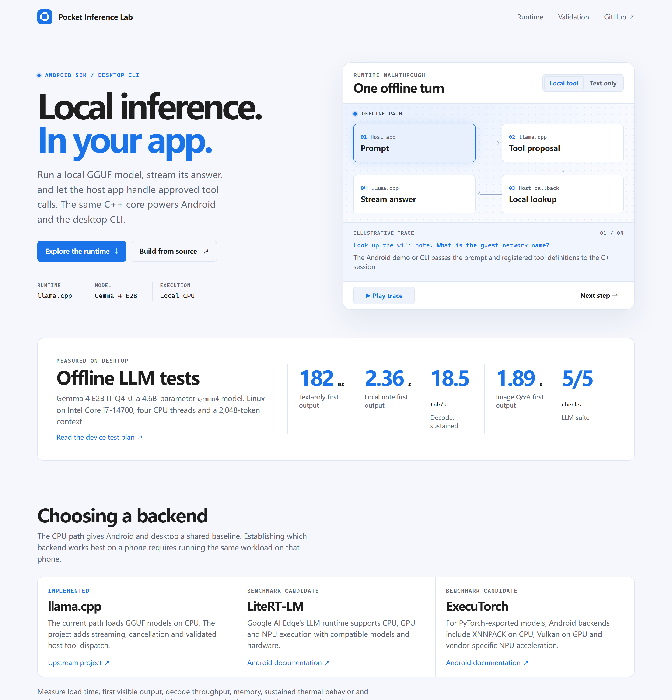

Web / Android · Agent 编排
Foogle
基于 Google ADK 的 Agent 工作台。独立 worker 执行任务，用户可以在 Web 调用图中查看模型和工具的输入、输出与状态。
查看调用图
Web / Android · Agent 编排
基于 Google ADK 的 Agent 工作台。独立 worker 执行任务，用户可以在 Web 调用图中查看模型和工具的输入、输出与状态。
查看调用图
Android SDK / 桌面 CLI · 端侧推理
基于 C++ 和 llama.cpp 的本地 GGUF 运行时。用浏览器逐步回放工具调用，查看运行时怎样校验请求、交给宿主应用执行，再生成回答。
打开交互回放本地联调时，Foogle 通过 OpenAI 兼容接口连接由 llama-server 提供的 Gemma 4 E2B 模型，并在工作台里记录工具调用和流式回复。
17 × 23calculator391